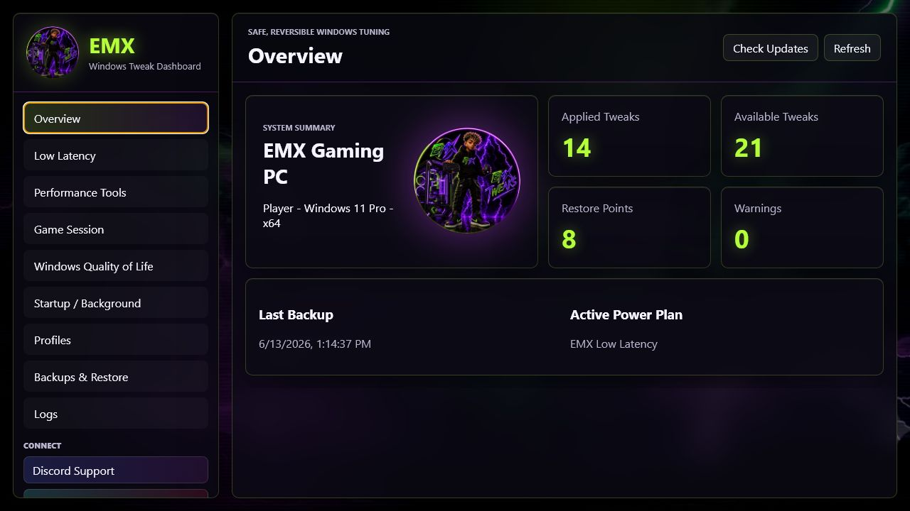
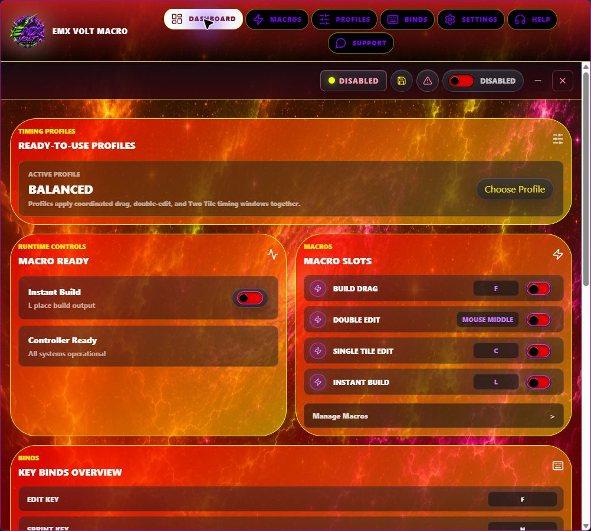
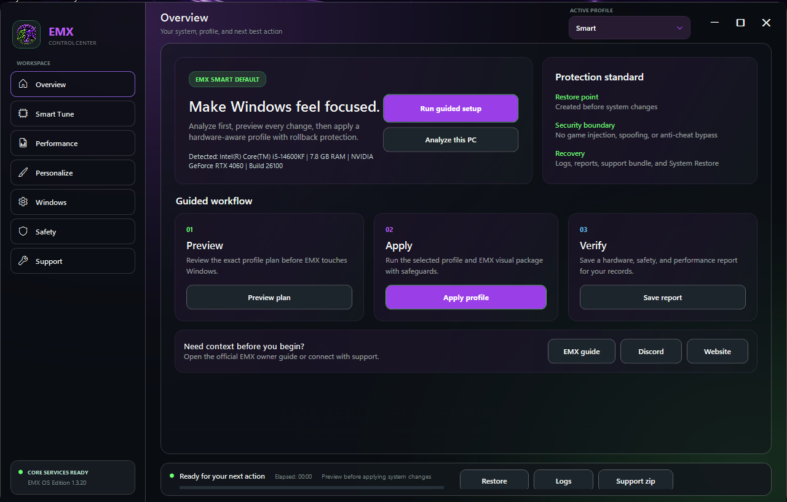
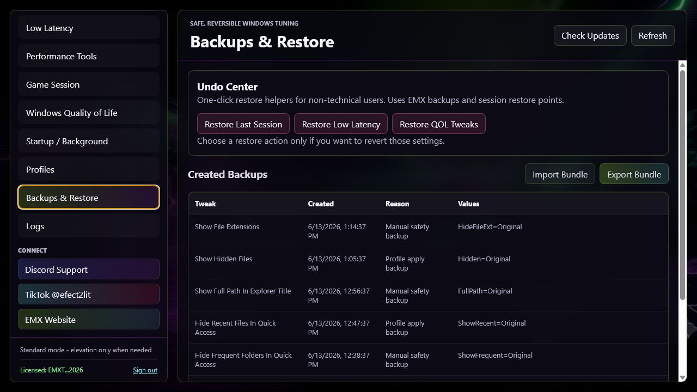
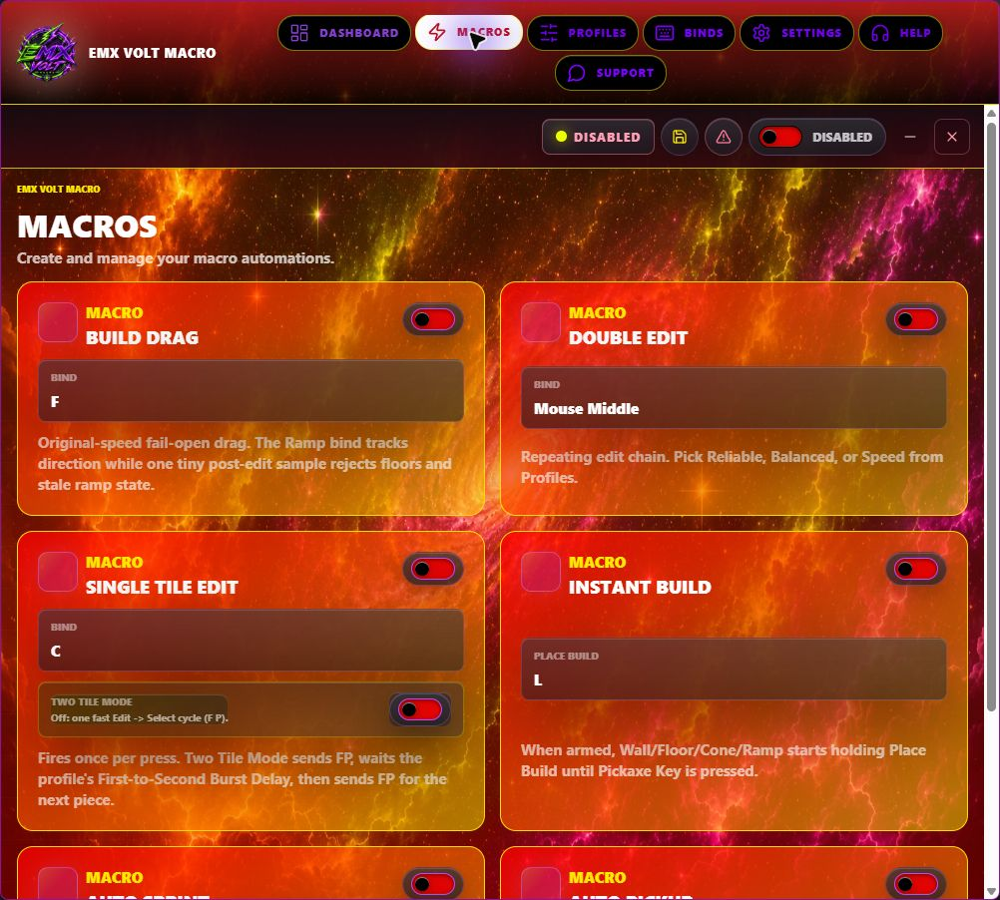
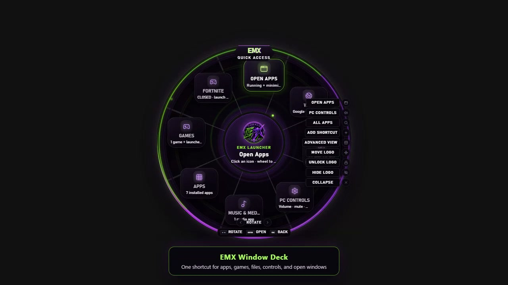
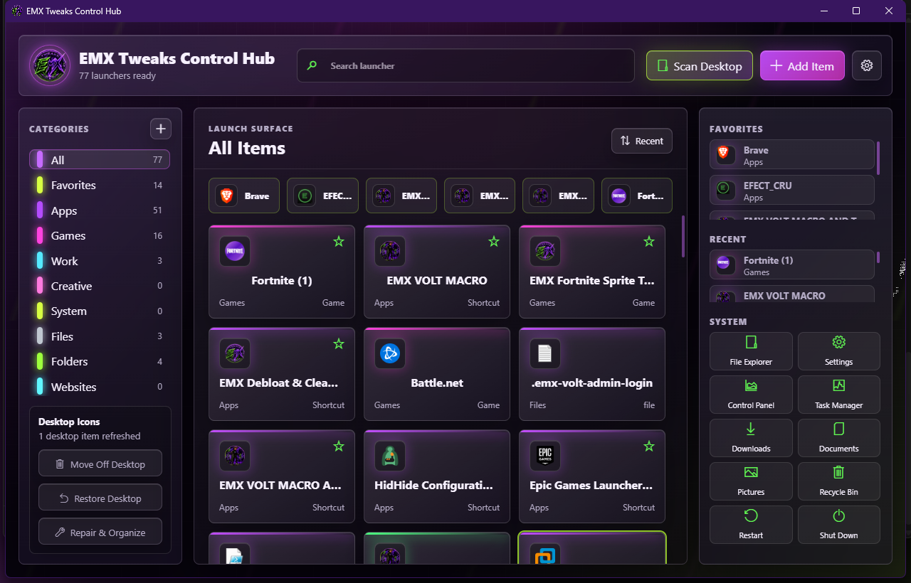

WINDOWS 10 + 11v1.3.20
EMX Custom OS
Hardware-aware setup profiles, personalization, change evidence, support tools, and recovery controls.
WINDOWS SOFTWARE • REAL PRODUCT PREVIEWS
Focused EMX tools for Windows tuning, macros, clips, training, and everyday desktop control—presented clearly before you download or buy.



EMX PRODUCT LINEUP
Large previews, clear pricing, and direct paths. No crowded popups or mystery product cards.
View the complete catalog →Compare products →Hardware-aware setup profiles, personalization, change evidence, support tools, and recovery controls.
Saved binds, timing controls, tray behavior, update checks, and a visible emergency stop.
Guided profiles, backups, low-latency tools, Game Session Mode, logs, and an Undo Center.


Pair reversible Windows controls with the current EMX macro desktop application.
FIRST-PARTY EMX AFFILIATE PROGRAM
Apply for an EMX referral link, see attributed visits and completed-sale commission records, and follow your onboarding checklist from one private dashboard.
FREE EMX SOFTWARE
Direct, focused utilities with honest requirements and real screenshots.

Animated command wheel for launching apps, restoring windows, shortcuts, and PC controls.
Download ZIP ↓
Search, pin, and organize the launchers, shortcuts, and system tools around your setup.
Download EXE ↓
Flick, tracking, precision, and reaction modules with settings and session reporting.
View trainer →A CLEARER EMX EXPERIENCE
Product pages use supplied interface captures rather than generic mockups.
Check Windows, hardware, privilege, and recovery needs before access.
Use Discord for setup help or the receipt-based key recovery page.
EMX SETUP FINDER
This matches your answers to the current catalog. It does not scan your PC or invent performance results.
READY WHEN YOU ARE
Choose a goal and priority. Optional setup answers make the match more useful without pretending to scan your PC.
EXPLORE EMX
Compare the current lineup or start with a free EMX utility.